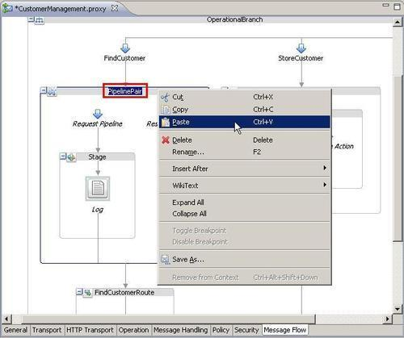

This recipe will just present a simple approach for doing refactoring of nodes and actions. It uses the copy/paste functionality of the Eclipse OEPE to copy a node/action from one place to another.
You can import the OSB project containing the base set up for this recipe into Eclipse OEPE from \chapter2\getting-ready\copying-nodes-actions.
Often when creating a new message flow, some node/actions are very similar. Instead of creating all of them from scratch, there is a way to copy them in Eclipse OEPE. To duplicate a PipelinePair node, perform the following steps:

The copy functionality in Eclipse OEPE provides a simple and efficient way to duplicate functionality in another place. This is handy because often the same kind of functionality is needed and there is no way to reuse code within a single message flow other than by copying it.
Sometimes it might not be possible to paste at the right place because the menu item is not available in both the context-sensitive menu as well as the main menu. In that case, duplicate the given node/action where it is allowed and then move it by applying the Moving nodes/actions in Eclipse OEPE by drag-and-drop recipe.
The copy/paste functionality also works across proxy services. Just open both artifacts and copy from one to the other. This is similar to copying text from one editor to another.